측량및지형공간정보기사 (2009-08-30 기출문제)
1과목: 측지학 및 위성측위시스템
1. 다음 중 반송파(carrier)의 모호정수(ambiguity)가 포함되어 있지 않는 관측치는?
- 일중위상차
- 이중위상차
- 삼중위상차
- 무차분 위상
(정답률: 86%)

2. GPS 반송파 위상추적회로에서 반송파 위상관측값을 순간적으로 손실하여 발생하는 오차를 무엇이라 하는가?
- AS
- Cycle Slip
- SA
- VRS
(정답률: 64%)
3. 평균 해수면(지오이드면)으로부터 어느 지점까지의 연직거리는?
- 정표고(Orthometric height)
- 역표고(Dynamic height)
- 타원체고(Ellipsoidal height)
- 자오이드고(Geoidal height)
(정답률: 55%)
4. 위도 42° 16‘ 11“일 때 평면곡률반경은 얼마인가? (단, 장반경 a=6400Km, b=6379km, 계산 값에 의한 모든 수는 소수 3자리에서 반올림한다.)
- 6391.78m
- -6391.78m
- 7391.78m
- -7391.78m
(정답률: 39%)
5. 측지선(geodesic)에 대한 설명으로 맞지 않는 것은?
- 지구면상 두 점을 잇는 최단거리가 되는 곡선을 측지선이라 한다.
- 평면곡선과 측지선의 길이의 차는 극히 미소하여 일반적으로 무시할 수 있다.
- 측지선은 미분기하학으로 구할 수 있으나 직접 관측하여 구하는 것이 더욱 정확하다.
- 측지선은 두 개의 평면곡선의 교각을 2:1로 분할하는 성질이 있다.
(정답률: 80%)
6. 지자기에 관한 설명 중 틀린 것은?
- 지자기변화에는 주기적 변화와 불규칙 변화가 있다.
- 영년변화는 수백년을 주기로 나타나는 지자기의 변화이다.
- 자기 폭풍은 지진에 의해 발생된다.
- 작 폭풍은 단파 통신의 지장을 초래한다.
(정답률: 82%)
7. 다음 중 천문 좌표계에 해당하지 않는 것은?
- 지평 좌표
- 적도 좌표
- 황도 좌표
- 경위도 좌표
(정답률: 73%)
8. 자오선과 항상 일정한 각도를 유지하는 지표의 선으로서 그 선의 각 점에서 방위각이 일정한 곡선은?
- 항정선
- 측지선
- 묘유선
- 등위도선
(정답률: 74%)
9. 다음 좌표계 중 성질이 다른 것은?
- UTM 좌표계
- GRS80 좌표계
- ITRF 좌표계
- WGS84 좌표계
(정답률: 알수없음)
10. VLBI(Very Long Base-line Interferometry)에 관한 설명으로 알맞은 것은?
- VLBI의 기술로는 일반적으로 수십 km 이내의 범위에서만 직접 측정이 유효하다.
- VLBI는 반사경이 부착된 위성으로부터 되돌아오는 위상차로 위치를 결정한다.
- VLBI는 전파의 간섭을 이용하는 방법으로 측지분야에 응용하고 있다.
- VLBI의 실용화는 주로 물리학적 측지학에 큰 영향을 주었다.
(정답률: 69%)
11. GPS 위성측량에 관한 다음의 설명 중 잘못된 것은?
- SA방법의 해제로 절대측위의 정확도가 향상되었다.
- 위성시계의 오차가 없다면 3대의 위성신호를 사용하여도 위치결정이 가능하다.
- GPS 위성은 위성마다 각각 자기의 코드 신호를 전송한다.
- 위성과 수신기 간의 거리측정의 정확도는 C/A 코드를 사용하거나 L1 반송파를 사용하거나 차이가 없다.
(정답률: 39%)
12. DOP(Dilution of Precision)에 대한 설명 중 적당하지 않은 것은?
- 높은 DOP는 위성의 기하학적인 배치 상태가 나쁘다는 것을 의미한다.
- 수신기를 가운데 두고 4개의 위성이 정사면체를 이룰 때, 즉 최대 체적일 때 GDOP, PDOP 등이 최소가 된다.
- DOP 상태가 좋지 않을 때는 정밀 측량을 피하는 것이 좋다.
- DOP 수치가 클 때는 DDOP 방법을 이용하여 관측하여야 한다.
(정답률: 알수없음)
13. 천구의 북극은 황도의 북극을 중심으로 각반경 23.5°인 원을 그리며 약 25800년을 주기로 회전하는데 이런 현상을 무엇이라 하는가?
- 광행차
- 도플러효과
- 장동
- 세차운동
(정답률: 91%)
14. 다음 중 해상의 수평위치 결정방식이 아닌 것은?
- Echo Sounder
- Raydist
- Omega
- Decca
(정답률: 알수없음)
15. 다음 중 중력이상 보정으로 맞지 않은 것은?
- 도플러 이상 보정
- 프리-에어 이상 보정
- 지각평형 이상 보정
- 단순 부게 이상 보정
(정답률: 80%)
16. GPS 신호의 오차에 관한 설명이 틀린 것은?
- 대류권 오차는 수학적 모델링을 통하여 감소시킬 수 있다.
- 차분을 통하여 랜덤오차를 감소시킬 수 있다.
- 높은 건물이나 나무에서 떨어져 관측함으로써 다중경로 오차를 줄일 수 있다.
- 전리층 오차는 이중주파수의 사용으로 감소시킬 수 있다.
(정답률: 알수없음)
17. 다음 중 GPS를 이용한 측량 중 가장 정밀한 위치결정 방법으로 정밀한 기준점측량이나 학술목적으로 주로 사용되는 방법은?
- 스테틱(Static)측량
- 키네마틱(Kinematic)측량
- 단독 측위(point positioning)
- RTK(Real Time Kinematic)
(정답률: 93%)
18. 다음 중 기하학적 측지학에 속하지 않는 것은?
- 수평위치의 결정
- 길이 몇 시(時)의 결정
- 탄성파 측점
- 측지학적 3차원 위치결정
(정답률: 알수없음)
19. GPS 시스템 오차 원인과 가장 거리가 먼 것은?
- 위성 시계 오차
- 위성 궤도 오차
- 코드 오차
- 전리층과 대류권에 의한 오차
(정답률: 73%)
20. 중력변화의 원인과 가장 거리가 먼 것은?
- 만류인력 상수의 변화
- 지구의형상과 질량의 변화
- 기상학적 및 지질학적 변동
- 대기물질분포의 변화
(정답률: 알수없음)
2과목: 응용측량
21. 하천수위 중 갈수위에 대한 설명으로 옳은 것은?
- 1년 중 275일간은 이보다 내려가지 않는 수위
- 수년간 저수위 및 고수위를 평균한 수위
- 어느 기간 중 가장 많이 일어난 수위
- 1년을 통하여 355일간은 이보다 내려가지 않는 수위
(정답률: 73%)
22. 하천측량을 실시하는 주요 목적으로 가장 적합한 것은?
- 하천의 종, 횡단면도를 얻기 위함
- 하천개수공사와 관련된 공사비를 산출하기 위함
- 하천위 수위, 경사 등을 알기 위함
- 하천개수공사나 하천공작물의 계획, 설계, 시공에 필요한 자료를 얻기 위함
(정답률: 70%)
23. 다음 중 터널측량 작업순서가 올바른 것은?
- 예측→지표설치→답사→지하설치
- 답사→예측→지표설치→지하설치
- 예측→답사→지하설치→지표설치
- 답사→지표설피→예측→지하설치
(정답률: 75%)
24. 지하시설물에 대한 탐사 공정 순서로 옳은 것은?
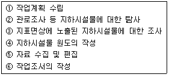
- ①→⑤→③→②→④→⑥
- ①→②→③→④→⑤→⑥
- ①→⑤→④→③→②→⑥
- ①→②→⑤→④→③→⑥
(정답률: 50%)
25. 수평 및 수직거리를 동일한 정확도로 관측하여 10000m3의 체적에 대한 체적 산정오차가 5.0m3 이하로 하기 위한 거리관측의 허용정확도는?
- 1/3000 이하
- 1/4000 이하
- 1/5000 이하
- 1/6000 이하
(정답률: 28%)
26. 다음의 하천 수위 중 제방의 축조, 교량의 건설 또는 배수공사 등 치수목적으로 주로 이용되는 수위는?
- 최저수위
- 평균최고수위
- 평균수위
- 최다수위
(정답률: 77%)
27. 노선의 종단면도에 계획선을 넣을 때 고려하여야 할 사항에 대한 설명으로 틀린 것은?
- 계획경사는 제한경사 이내로 한다.
- 절토 및 성토가 균형이 되도록 한다.
- 경사와 곡선은 가급적 병설한다.
- 유용토의 운반거리를 고려한다.
(정답률: 알수없음)
28. 지하시설물의 관측방법으로는 원래는 누수를 찾기 위한 기술로 PVC 또는 플라스틱 관 등과 같은 비금속 관도관로를 찾는데 주로 이용되는 방법은?
- 전자 관측법
- 자기 관측법
- 음파 관측법
- 탄성파 관측법
(정답률: 알수없음)
29. 사각형 ABCD를 CO를 통하여 면적을 2등분 하려면 OD의 길이를 얼마로 해야 하는가? (단, □ABCD=2500m2, CE의 길이는 100m이다.)
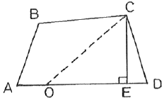
- 20m
- 25m
- 3m
- 35m
(정답률: 알수없음)
30. 그림에서 댐의 저수면 높이를 100m로 할 때 저수량은? (단, 60m 미만의 저수량은 고려하지 않는다.)
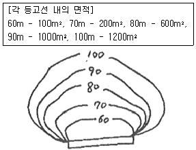
- 24333.3m3
- 32534.6m3
- 39781.4m3
- 42468.7m3
(정답률: 60%)
31. 1:1000 축척의 지도를 생가하여 구한 토지의 면적이 3500m2 이었다. 만약 이 지도가 1:1200 축척으로 작성된 지도라면 토지의 실제 면적은?
- 4200m2
- 4900m2
- 5040m2
- 6048m2
(정답률: 40%)
32. 노선측량에서 단곡선을 설치하려 한다. 곡선반지름이 400m, 교각 56°일 때 곡선길이(C.L)는 접선길이(T.L)의 약 몇 배인가?
- 1.1배
- 1.8배
- 2.5배
- 5.0배
(정답률: 알수없음)
33. 곡선반지름이 200m인 원곡선을 설치하고자 한다. 도로의 시점에서 교점까지의 거리는 324.5m이며 교점부근에 장애물이 있어 아래 그림과 같이 점 A, B에서의 각을 관측하였을 때, 도로시점으로부터 원곡선 시점까지의 거리는?
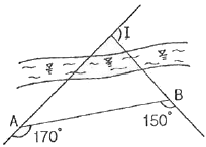
- 184.3m
- 251.7m
- 157.9m
- 286.4m
(정답률: 46%)
34. 그림과 같은 이차포물선에 의한 종단곡선에서 점 A로부터 X만큼 떨어진지점의 표고(HC')를 구하는 식은? (단, HA는 A점에서의 표고이다.)
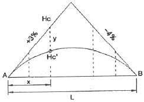
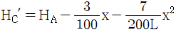
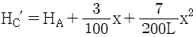
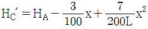
(정답률: 67%)
35. 원곡선 설치에서 교각 I=30° 00', 곡선반지름 R=600m인 경우 곡선 시점(B.C)에서의 시단현의 길이가 5m라면 종점에서의 종단현의 길이는? (단, 중심말뚝 설치 간격은 20m)
- 5.154m
- 9.159m
- 14.435m
- 15.422m
(정답률: 25%)
36. 하천에서 표면부자에 의하여 유속을 측정한 경우 평균유속과 수면유속의 관계에 대한 설명으로 가장 적합한 것은?
- 평균유속은 수면유속의 50~60%이다.
- 평균유속은 수면유속의 80~90%이다.
- 평균유속은 수면유속의 110~120%이다.
- 평균유속은 수면유속의 140~150%이다.
(정답률: 46%)
37. 완화곡선에 대한 설명으로 옳지 않은 것은?
- 완화곡선의 곡선반지름은 시점에서 무한대, 종점에서 원곡선 R로 된다.
- 완화곡선의 접선은 시점에서 원호에, 종점에서 직선에 접한다.
- 클로소이드의 형식에는 S형, 복합형, 기본형 등이 있다.
- 모든 클로소이드는 닮은꼴이며 클로소이드의 요소에는 길이의 단위가 있는 것과 단위가 없는 것이 있다.
(정답률: 25%)
38. 터널측량에서 지상측점과 터널내부의 측점이 일치하도록 하는 측량을 무엇이라 하는가?
- 지하수준 측량
- 지하 측량
- 갱내외 연결측량
- 지상 측량
(정답률: 70%)
39. 일반철도의 완화곡선에 주로 사용되는 것은?
- 렘니스케이트 곡선
- 클로소이드 곡선
- 사인 반파장 곡선
- 3차 포물선
(정답률: 30%)
40. 터널의 시점(P)과 종점(Q)의 좌표가 P(1200m, 800m, 75m), Q(1600m, 600m, 100m)일 때 P로부터 Q로 터널을 굴진할 경우 경사각은?
- 2° 11‘19“
- 2° 13‘19“
- 3° 11‘59“
- 3° 13‘59“
(정답률: 37%)
3과목: 사진측량 및 원격탐사
41. 다음 중 가장 높은 해상도를 가지고 있는 센서를 탐재하고 있는 위성은?
- Quick Bird
- IKONOS
- SPOT-4
- LANDSST-7
(정답률: 46%)
42. 위성을 이용한 원격탐사(Remote Sensing)의 특징으로 옳지 않은 것은?
- 짧은 기간 내에 넓은 지역을 동시에 관측할 수 있으며 반복관측이 가능하다.
- 회전주기가 일정하므로 원하는 지점 및 시기에 관측이 용이하다.
- 관측이 좁은 시야각으로 얻어진 영상은 정사투영에 가깝다.
- 탐사된 자료가 즉시 이용될 수 있으며 재해, 환경문제해결에 편리하다.
(정답률: 알수없음)
43. 다음 항공사진 촬영에 대한 설명 중 잘못된 것은?
- 고층 빌딩이 많은 지역에서는 종중복도를 감소시킨다.
- 산악지 같은 지형의 산은 변형되어 찍힌다.
- 촬영 각도가 기울어지면 같은 사진 내에서도 축척이 일정하지 않다.
- 주점, 연직점, 등각점의 특수 3점이 있다.
(정답률: 알수없음)
44. 다음 중 항공사진의 직접좌표등록기법과 직접적으로 관련된 사항은?
- 토탈스테이션에 의한 측량과 지상기준점 성과
- 지상에서 GPS에 의한 측량과 지상기준점 성과
- 항공기에 탑재된 GPS와 INS(관성한법장치)에 의한 외부표정요소
- 수치지도로부터 추출된 3차원 정보
(정답률: 40%)
45. 다음 중 병충해 조사 및 삼림조사, 홍수지역의 판독 등에 가장 적합한 사진은?
- 팬크로 사진
- 적외선 사진
- 자외선 사진
- 흑백 사진
(정답률: 64%)
46. 지상에 높이 30m의 굴뚝이 있다. 이 굴뚝을 촬영고도 1000m에서 초점거리 150mm의 사진기로 수직 촬영했더니 방사거리 80mm에 굴뚝 상단이 촬영되었다. 이 굴뚝의 사진상 변위는?
- 1.2mm
- 2.4mm
- 4.8mm
- 9.6mm
(정답률: 알수없음)
47. GIS 데이터 베이스에 관한 설명으로 옳지 않은 것은?
- 레코드가 모여 필드를 구성한다.
- 데이터 파일은 레코드, 필드, 키의 3가지로 구성된다.
- 파일베이스 방식에서 데이터베이스 방식으로 발전하였다.
- GIS에서는 일반적으로 동일길이 레코드 방식보다는 가변길이 레코드 방식을 선호한다.
(정답률: 73%)
48. 상호표정의 불완전모형을 설명한 것으로 가장 적합한 것은?
- 입체모형에서 회전인자를 사용할 수 없는 모형
- 입체모형에서 공면조건이 없는 모형
- 입체모형에서 일부가 구름이나 수면으로 가려져 상호표정에 필요한 6점을 이상적으로 배치할 수 없는 모형
- 입체모형에서 평행변위부 수정을 위하여 기계적 방법을 사용하여야 하는 모형
(정답률: 54%)
49. 지리정보자료의 내용, 품질, 조건, 기타 다양한 특징을 설명하는 자료에 관한 배경정보를 무엇이라 하는가?
- 메타데이터
- 데이터생산사양
- 데이터모델
- 위상구조
(정답률: 알수없음)
50. 동서 30km, 남북 20km인 대상지역을 초점거리 150mm인 항공측량카메라를 이용하여 비행고도 6000m에서 촬영하였을 때, 입체모델수와 필요한 수평위치 기준점수는? (단, 사진크기는 23×23cm, 종중복도 60%, 횡중복도 30%, 촬영은 동서방향으로 한다.)
- 모델수 24, 수평위치 기준점수 48
- 모델수 24, 수평위치 기준점수 72
- 모델수 36, 수평위치 기준점수 72
- 모델수 36, 수평위치 기준점수 108
(정답률: 70%)
51. 다음 중 영상지도 제작에 가장 적합한 영상(사진)은?
- 경사사진
- 초광각사진
- 파노라믹사진
- 정사사진
(정답률: 알수없음)
52. 촬영고도 3000m에서 촬영한 항공사진의 축척이 1:20000이면 이 사진기의 초점거리는 얼마인가?
- 9cm
- 15cm
- 21cm
- 25cm
(정답률: 55%)
53. 다음 중 지형공간정보체계의 기능을 충분히 발휘하기 위하여 요구되는 구비요건에 대한 설명으로 틀린 것은?
- 하나 또는 그 이상의 자료 입력 방식
- 소요 공간관계와 관련된 정보의 저장 및 유지기능
- 자료간의 상관성과 적절한 요소들의 원인 결과 반응을 고려한 모형화
- 단일 방식에 의한 자료 출력
(정답률: 알수없음)
54. 초점거리 300mm, 사진크기 23cm×23cm, 피사각 57°인 보통각 카메라로 촬영할 때 기선고도비는? (단, 종중복도는 60%로 한다.)
- 1/2.23
- 1/2.74
- 1/3.26
- 1/4.52
(정답률: 알수없음)
55. 자료의 형태에 대한 설명으로 틀린 것은?
- 벡터자료는 고해상도의 표현이 가능하다.
- 벡터자료는 간단한 구조의 자료형식을 갖고 있어 초기구축비용이 저렴하다.
- 래스터자료는 레이어의 중첩이나 분석이 용이하다.
- 래스터자료는 데이터 용량이 크다.
(정답률: 64%)
56. 해석적 내부표정에서는 어떤 점의 좌표를 사용하는가?
- 자침점(pick point)
- 대공표지(aerial target)
- 지표(fiducal mark)
- 지상기준점(ground control point)
(정답률: 50%)
57. 공간좌표 변환에 사용되는 Affine 식에 대한 설명으로 옳지 않은 것은?
- 미지수가 6개 이다.
- 등각 상사변환이다.
- 좌표계의 회전이 포함된다.
- 원점의 이동이 포함된다.
(정답률: 59%)
58. 다음 2차원 퀴드트리(quadtree)에서 B의 면적은? (단, 하나의 셀의 면적을 1이라고 가정한다.)
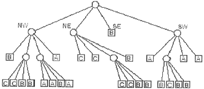
- 20
- 24
- 30
- 32
(정답률: 36%)
59. 기계좌표(xm, ym)를 사진좌표(xp, yp)로 변환하기 위한 내부표정을 수행하기 위해 다음과 같은 좌표변환식을 사용하였다.
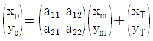
만일 기계좌표계와 사진좌표계가 정확히 일치할 경우 (즉, 기계좌표계와 사진좌표계가 동일한 경우)에 변화식의 요소로 옳은 것은?- a11=1, a12=1, a21=1, a22=1, xT=1, yT=1
- a11=1, a12=1, a21=1, a22=1, xT=0, yT=0
- a11=0, a12=0, a21=0, a22=0, xT=1, yT=1
- a11=1, a12=0, a21=0, a22=1, xT=0, yT=0
(정답률: 39%)
60. 대상물에 대한 일반적인 수치지도 도형정보 표현방법이 틀린 것은?
- 전봇대 - 면(Polygon)
- 호수 - 면(Polygon)
- 우물 - 점(Point)
- 철도 - 선(Line)
(정답률: 70%)
4과목: 지리정보시스템
61. 다음 중 일반적으로 오차론에서 다루는 오차는?
- 정오차
- 착오
- 우연오차
- 누차
(정답률: 알수없음)
62. 1km의 왕복오차가 ±15mm의 제한으로 수준측량을 실시하였다면 1.5km의 왕복 허용오차는 얼마인가?
- ±22mm
- ±18mm
- ±15mm
- ±12mm
(정답률: 28%)
63. 심각측량에서 각 관측의 정확도가 같을 경우, 이 오차가 변의 길이에 미치는 영향에 대한 설명으로 옳은 것은?
- 각이 작을수록 영향이 작다.
- 각이 작을수록 영향이 크다.
- 각의 크기에 관계없이 영향을 일정하다.
- 각은 변 길이에 아무런 영향이 없다.
(정답률: 42%)
64. 삼각망의 형태 중 유심다각망에 대한 설명으로 옳은 것은?
- 폭이 좁고 거리가 먼 지역에 적합하다.
- 동일 측점수에 비하여 포함면적이 가장 넓다.
- 조건식의 수가 가장 많아 정확도가 가장 높다.
- 거리에 비하여 관측수가 적어 측량이 신속하고 측량비가 적게 든다.
(정답률: 20%)
65. 거리 관측오차의 허용오차(상대오차)를 1/106 으로 할 때 대지측량과 평면측량의 구분에 기준이 되는 면적은? (단, 지구반경은 6370km)
- 약 600 km2
- 약 400 km2
- 약 300 km2
- 약 200 km2
(정답률: 50%)
66. 우리나라 지형도제작 시 사용하는 투영법은 무엇인가?
- 방위도법
- 원통도법
- 원추도법
- 평면도법
(정답률: 알수없음)
67. 다음 중 마라톤 코스와 같은 표면거리를 측정할 수 있는 기기로 가장 적절한 것은?
- 중량이 작은 장철자
- 기선에서 검정된 자전거
- 초장기선 간선계(VLBI)
- 유리섬유테이프
(정답률: 77%)
68. 축척 1:50000 지형도상에서 두 점의 거리가 8.0cm 이었고 축척을 모르는 다른 지형도상에서 동일한 두 점간의 거리가 57.1cm라고 한다면 이 지형도의 축척은?
- 약 1:5000
- 약 1:7000
- 약 1:10000
- 약 1:14000
(정답률: 55%)
69. 축척 1:5000인 지형도(도면)의 면적을 측정하여 4.8cm2결고를 얻었다. 이 때 도면이 가로, 세로 모두 1.5%씩이 수축되어 있었다면 실제면적은 약 얼마인가?
- 약 11640m2
- 약 11820m2
- 약 12180m2
- 약 12360m2
(정답률: 55%)
70. 다음과 같이 “사과길”로부터 은행건물의 위치를 정확히 알고자 다음과 같은 측량결과를 얻었다. CD의 거리는? (단, ∠EAB=62°, AB=7.40m, BC=10m, ∠ABC=∠ADC=90°)
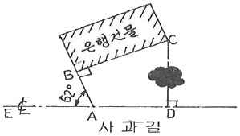
- 12.44m
- 12.30m
- 12.00m
- 11.23m
(정답률: 알수없음)
71. 해안선(표고 0m)에서 눈높이 150cm인 사람이 수평선을 바라볼 때 수평선까지의 거리는 약 얼마인가? (단, 양차를 고려하고, 지구반경 R=6370km, 굴절계수 k=0.14임)
- 4.7km
- 5.7km
- 6.7km
- 8.7km
(정답률: 알수없음)
72. 삼각측량에 있어서 표고가 400m인 평탄지에서 거리 1.3km를 평균 해수면상의 거리로 고치기 위한 보정값은 얼마인가? (단, 지구의 반경은 6370km 이다.)
- -0.076m
- +0.076m
- -0.082m
- +0.082m
(정답률: 50%)
73. 삼각점의 선정시 주의하여야 할 사항으로 옳지 않은 것은?
- 견고한 지반에 설치하여 이동, 침하 등이 없도록 한다.
- 삼각점 상호간에 시준이 잘 되어야 한다.
- 삼각형은 가능한 정삼각형에 가깝도록 하는 것이 좋다.
- 가능한 측점 수를 많게 하여 후속 측량의 활용도를 높인다.
(정답률: 75%)
74. 우리나라의 1:25000 지형도에서 간곡선에 대한 설명으로 옳은 것은?
- 파선이고 5m 간격이다.
- 파선이고 10m 간격이다.
- 실선이고 5m 간격이다.
- 실선이고 10m 간격이다.
(정답률: 80%)
75. 디지털데오돌라이트로 한 각을 관측한 경우, 각관측의 시준오차가 ±4“일 때 4배각 관측시 각 오차는? (단, 읽음오차는 없음)
- ±1.00“
- ±2.83“
- ±3.46“
- ±4.00“
(정답률: 50%)
76. 폐합트래버스를 측량한 후 계산하여 표와 같은 결과를 얻었다. 측선 BE의 방위각은?
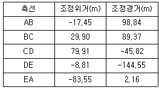
- 45°
- 135°
- 225°
- 315°
(정답률: 알수없음)
77. 그림과 같이 담장 PQ가 있어 P점에서 표척을 거꾸로 세워, 그림과 같은 결과를 얻었다. B점의 표고는? (단, A점의 표고는 135.000m이다.)
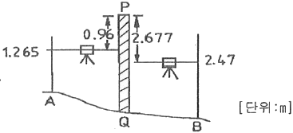
- 133.125m
- 133.215m
- 132.078m
- 132.470m
(정답률: 59%)
78. 그림과 같이 P점의 높이를 직접 수준측량에 의해서 4개의 수준점(A, B, C, D)으로부터 관측하였다. P점의 최확값은? (단, A→P=34.241m, B→P=34.240m, C→P=34.235m, D→P=34.238m)
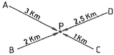
- 34.235m
- 34.238m
- 34.240m
- 34.241m
(정답률: 알수없음)
79. 1:50000 지형도의 산정에서 계곡까지의 거리가 25mm이고, 산정의 표고가 530m, 계곡의 표고가 130m이다. 이 사면의 경사는?
- 25%
- 30%
- 32%
- 35%
(정답률: 알수없음)
80. 각 관측에서 망원경을 정ㆍ반으로 관측하여 평균하여도 소거되지 않는 오차의 원인은?
- 시준축과 수평축이 직교하지 않는다.
- 연직축이 정확히 연직선에 있지 않다.
- 수평축이 연직축에 직교하지 않는다.
- 회전축에 대하여 망원경의 위치가 편심되어 있다.
(정답률: 67%)
5과목: 측량학
81. 기본측량의 측량성과를 사용하여 지도 등을 간행하고자 할 때 국토지리정보원장의 심사를 받아야 하는데 이 때 심사사항이 아닌 것은?
- 표준작업방법
- 난외표시
- 작업주기 및 일자
- 지형ㆍ지물 및 지명의 표시
(정답률: 0%)
82. 중앙지명위원회에 대한 설명으로 틀린 것은?
- 행정안전부에 중앙지명위원회를 둔다.
- 위원장 및 부위원장 각 1인을 포함한 20인 이내의 위원으로 구성한다.
- 위원장은 국토지리정보원장이 된다.
- 부위원장은 국토지리정보원 지명엄무를 담당하는 과장 또는 담당관이 된다.
(정답률: 알수없음)
83. 측량심의회의 심의사항이 아닌 것은?
- 공공측량 및 일반측량에서 제외되는 측량의 범위
- 국토지리정보원장이 부의하는 사항
- 측량도서의 발간
- 공공측량의 계획 수립 및 실시
(정답률: 9%)
84. 부정한 방법으로 측량업의 등록을 한 자의 벌칙 기준은?
- 2년 이하의 징역 또는 2000만원 이하의 벌금에 처한다.
- 2년 이하의 징역 또는 1000만원 이하의 벌금에 처한다.
- 200만원 이하의 벌금에 처한다.
- 200만원 이하의 과태료에 처한다.
(정답률: 알수없음)
85. 공공측량 중 기본측량에 관한 규정을 준용하는 것이 아닌 것은?
- 측량표의 관리
- 손실보상
- 표지설치의 통지
- 공공측량의 기준
(정답률: 55%)
86. 기본측량의 측량성과를 고시할 때 포함되어야 할 사항으로 거리가 먼 것은?
- 임시 설치 표지를 포함한 측량표의 수
- 측량의 정확도
- 측량성과의 보관장소
- 측량의 규모
(정답률: 알수없음)
87. 기본측량에 관한 연관계획을 수립하는 자는?
- 지방국토관리청장
- 국토지리정보원장
- 시ㆍ도지사
- 대한측량협회장
(정답률: 70%)
88. 다음 중 지도의 외도곽 바깥쪽에 표시하는 사항이 아닌 것은?
- 도엽명
- 행정구역색인
- 발행자
- 행정구역경계
(정답률: 82%)
89. 공공측량의 측량성과와 측량기록을 보관하고 이를 일반인에게 열람시켜야 하는 곳은?
- 국회도서관
- 공공측량계획기관
- 공공측량작업기관
- 시ㆍ군ㆍ구 지적서고
(정답률: 54%)
90. 기본측량을 위하여 설치한 측량표는 누가 관리하여야 하는가?
- 국토해양부장관
- 해당토지소유자
- 관할시장 또는 군수
- 국토지리정보원장
(정답률: 43%)
91. 다음 중 기본측량의 실시를 공고하여야 하는 사람은?
- 국토해양부장관
- 지방국토관리청장
- 국토지리정보원장
- 시ㆍ도지사
(정답률: 47%)
92. 다음 중 측량에 관한 설명이 잘못된 것은?
- 측량성과란 측량을 통하여 얻은 최종 결과를 말한다.
- 측량작업기관이라 함은 관계기관의 지시 또는 위임에 따라 기본측량 및 공공측량에 관한 계획을 수립하는 자를 말한다.
- 지도라 함은 전산시스템을 이용하여 이를 분석, 편집 및 입ㆍ출력할 수 있도록 제작된 수치지형도를 포함한 것을 말한다.
- 측량기록이란 측량성과를 얻을 때까지의 측량에 관한 작업의 기록이다.
(정답률: 알수없음)
93. 다음의 측량표 중 설치자의 이름을 명시할 필요가 없는 것은?
- 도근점표석
- 측표
- 방위표석
- 표기
(정답률: 알수없음)
94. 공공측량용역 현장에 측량기술자의 배치 기준으로 맞는 것은?
- 중급기술자 1인 이상
- 고급기술자 1인 이상
- 중급기술자 2인 이상
- 고급기술자 2인 이상
(정답률: 60%)
95. 측량법에서 정의한 측량업의 종류가 아닌 것은?
- 연안조사측량업
- 공간영상도화업
- 수치지도제작업
- 소규모측량업
(정답률: 70%)
96. 국토해양부장관 등이 처분을 하고자 할 경우에 청문을 실시하여야 하는 것이 아닌 것은?
- 성능검사대행자 등록의 취소
- 측량기술자 자격의 취소
- 지도판매대행자 지정의 취소
- 측량업 등록의 취소
(정답률: 70%)
97. 다음 지도도식규칙에 대한 설명이 바르지 못한 것은?
- 측량성과를 이용하여 간행하는 지도의 도식에 관한 기준을 정한 것이다.
- 기본측량 및 공공측량의 성과로서 지도를 간행하는 경우에 적용한다.
- 기본측량 및 공공측량 성과를 간접으로 이용하는 지도 간행물에는 적용하지 않는다.
- 세부 기준은 국토지리정보원장이 정하며, 세부기준이 없는 경우에는 간행자가 정할 수 있다.
(정답률: 73%)
98. 기본측량성과 중 지도 및 연안해역 기본도를 허가 없이 국외로 반출할 수 있는 경우에 대한 설명으로 틀린 것은?
- 대한민국정부와 외국정부간에 체결된 협정 또는 합의에 의하여 상호 교환하는 경우
- 정부를 대표하여 외국정부와 교섭하거나 국제회의 또는 국제기구에 참석하는 자가 자료로 사용하기 위하여 반출하는 경우
- 관광객 유치와 관광시설의 선전을 목적으로 제작하여 반출하는 경우
- 축척 5만분의 1 이상의 축척도를 국외로 반출하는 경우
(정답률: 알수없음)
99. 1:5,000 지형도 상에서 표현하여야 할 제방은 도상길이 1.0cm, 높이 몇 m 이상의 것을 기준으로 하는가?
- 10m
- 5m
- 3m
- 1.5m
(정답률: 39%)
100. 성능검사대행자 등록의 결격사유의 기준으로 옳지 않은 것은?
- 한정치산자
- 금치산자
- 임원중에 금치산자가 있는 법인
- 등록 취소된 후 3년이 경과되지 아니한 자
(정답률: 50%)
반송파(carrier)는 주파수가 일정한 신호를 말합니다. 그러나 이 신호가 전파 경로를 통과하면서 시간 지연이 발생하고, 이로 인해 신호의 위상(phase)이 변화합니다. 이러한 위상 변화를 모호정수(ambiguity)라고 합니다.
이에 반해, "무차분 위상"은 위상이 변하지 않는 신호를 말합니다. 따라서 모호정수가 포함되어 있지 않습니다.
반면 "일중위상차", "이중위상차", "삼중위상차"는 각각 1, 2, 3개의 모호정수를 가지는 신호를 말합니다. 이는 위상 변화가 발생하고, 그 변화량이 일정한 주기를 가지기 때문입니다.
따라서, "무차분 위상"은 모호정수가 없는 신호이므로 정답입니다.